| Список трудов | Fuzzy Technologies Lab. |
ГЕНЕТИЧЕСКИЙ ПОДХОД И НЕЧЕТКИЕ ОЦЕНКИ
В ОПТИМИЗАЦИИ ПАРАМЕТРОВ ПИД-РЕГУЛЯТОРАС.В. Жукова, Ю.Н. Золотухин, Л.А. Рахманова
Лаборатория нечетких технологий
Институт автоматики и электрометрии
Сибирское отделение РАН
Россия
630090, Новосибирск, просп. ак. Коптюга, 1
Тел.: (3832) 332625, Факс: (3832) 333863
E-mail: zolotukhin@iae.nsk.su
http://www.idisys.iae.nsk.su
Ключевые слова: генетический алгоритм, нечеткие множества, регуляторы, оптимизация.
Abstract
In this paper the method of controller coefficients selection is suggested. This method provide satisfactory kind of transitional characteristics of closed system. For effective controller coefficients search use fuzzy estimation of transitional characteristics parametres and genetic algorithms. Numerical example demonstrate that method is efficient and acceptible to use in different area.Введение
В практике автоматического управления известны различные методы настройки параметров регулятора, например, методика Циглера-Никольса [1]. Однако, обеспечивая устойчивость системы и удовлетворительное качество переходного процесса, эти методы не позволяют вести целенаправленный подбор параметров регулятора для получения переходной кривой заданного вида. В докладе рассмотрена задача получения заданной переходной характеристики путем направленного перебора параметров регулятора.
Модель системы и ее параметры
Рассмотрим модель замкнутой системы с объектом третьего порядка и ПИД-регулятором. Она описывается дифференциальным уравнением 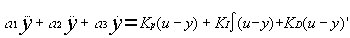, правая часть которого описывает модель объекта третьего порядка, а левая - ПИД-регулятор. Решение этого уравнения при единичном скачке на входе определяет кривую переходного процесса в системе. Для оценки качества переходного процесса в инженерной практике нередко используются следующие параметры (рис. 1):
- t н - время нарастания, т.е. время, за которое переменная y(t) возрастает с 0.1 до 0.9 установившегося значения ,
- S - выброс (максимальное превышение сигналом y(t) единичного уровня),
- t з - время затухания переходного процесса ( время между моментом первого достижения сигналом y(t) единичного уровня и моментом, начиная с которого значения y(t) остаются внутри интервала [1 e],
e - некоторая постоянная).
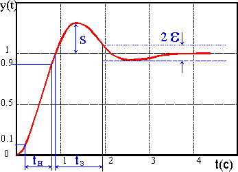
Рис. 1. Вид переходной характеристики и ее параметров
Оценка переходной кривой по упомянутым выше параметрам (t н, S, t з) представляет собой многокритериальную задачу. Для ее решения воспользуемся предложенным Р.Беллманом и Л.Заде методом слияния целей и ограничений [2]. Введем лингвистические переменные время нарастания, время затухания, выброс и определим на каждой из них терм приемлемое значение как нечеткое множество с функцией принадлежности m(x) трапецеидального вида. Пример функции принадлежности для терма приемлемое значение лингвистической переменной выброс приведен на рис. 2.
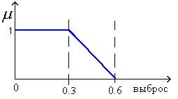
Рис. 2 Функция принадлежности для терма приемлемое значение
лингвистической переменной выбросКонкретные значения параметров переходной кривой ( t н, S, t з) могут быть охарактеризованы степенью принадлежности m(x) каждого из параметров к терму приемлемое значение соответствующей лингвистической переменной. В рассматриваемом нами случае представляется естественным принять в качестве оценки переходной кривой функцию
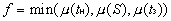 Схема поиска приемлемой кривой переходного процесса
С учетом изложенного схема поиска приемлемой кривой переходного процесса может выглядеть следующим образом:
- эксперт задает функции принадлежности терма приемлемое значение для трех рассматриваемых параметров;
- одним из известных методов вычисляются начальные величины коэффициентов регулятора ( 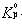, 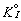, 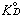);
- вводятся случайные значения поправок к начальным величинам коэффициентов ( DKp, DKI и DKD).;
- вычисляются новые значения коэффициентов 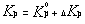, 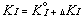, ;
- производится расчет переходной характеристики путем решения уравнения (1) с коэффициентами, полученными в п. d);
- вычисляются значения параметров t н, S, t з;
- вычисляется степень принадлежности
m(x) каждого из параметров к нечеткому множеству приемлемое значение соответствующей лингвистической переменной;- вычисляется общая оценка переходной кривой по выражению (2). Затем процедура повторяется при новых значениях поправок.
Генетический подход
В качестве метода эффективного нахождения следующих значений коэффициентов регулятора выбран генетический подход. Генетические алгоритмы (ГА) это поисковая техника, имитирующая законы природной селекции и генетики [3]. Структура простого генетического алгоритма выглядит следующим образом. На протяжении к-ой итерации ГА сохраняет популяцию потенциальных решений (хромосом) 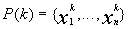.
Каждое решение 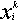 оценивается некоторой мерой пригодности (fitness). Затем формируется новое поколение ((k+1)-итерация) путем селекции решений в соответствии с мерой пригодности. Вероятность быть отобранным в следующее поколение выражается в виде 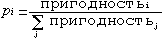. Некоторые решения из следущего поколения подвергаются действию генетических операторов (кроссовера и мутации) для образования новых решений [4]. Кроссовер комбинирует характеристики пары решений для получения двух решений - потомков путем взаимного обмена сегментами родительских хромосом. Мутация произвольно изменяет один или несколько генов в выбранной хромосоме. Алгоритм завершает работу при достижении заданных значений пригодности либо по исчерпанию числа поколений.
Численный пример:
Для оценки эффективности предложенного метода проведен подбор коэффициентов ПИД-регулятора в системе с объектом третьего порядка (T1=0.1с, T2=0.2с, T3=0.7с). Приняты трапецеидальные функции принадлежности терма приемлемое значение, характерные значения которых Х1 и Х2 для параметров t н, S, t з приведены в таблице:
Х1 X2 t н 0.4 0.8 S 0.3 0.6 t з 1.5 2.0
В эксперименте использован генетический алгоритм со следующими параметрами:Использовано представление возможного решения в виде хромосомы с тремя генами, соответствующими DKp, DKI и DKD. В отличие от простого генетического алгоритма [5] в эксперименте использовано свойство элитизма, обеспечивающее обязательное сохранение в следующем поколении решения с наибольшей пригодностью из текущего поколения. На рис. 3 представлены графики значений пригодности лучшего решения и средней пригодности в каждом поколении; на рис. 4 приведены исходная и достигнутая переходные кривые исследуемой системы.
- размер популяции 10;
- число поколений 20;
- вероятность кроссовера 0.9;
- вероятность мутации 0.001;
- точность вычислений 0.0001.
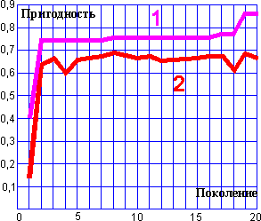
Рис. 3. Графики значений пригодности лучшего решения (1)
и средней пригодности (2)в каждом поколении
Заключение.
В работе продемонстрирована методика целенаправленного поиска значений коэффициентов регулятора, обеспечивающих заданный вид отклика замкнутой системы управления на единичный скачок уставки. Использование сочетания нечетких оценок параметров и генетического метода поиска позволило построить процедуру подбора, эффективность которой подтверждена численным примером с объектом третьего порядка и ПИД-регулятором.
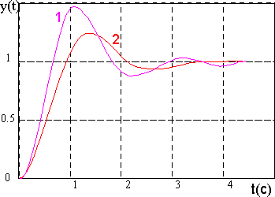
Рис. 4. Исходная (1) и полученная (2) переходные кривые
Список литературы:
[1] Кондратьев В.В., Мазуров В.М.
Быстродействующий адаптивный ПИДрегулятор с настройкой параметров по методу Циглера Никольса
// Теплоэнергетика, 1994, N10. с.60-63.
[2] Giuseppe Munda.
Multicriteria evaluation in a fuzzy environment.
Physica-Verlag, 1995.
[3] Chuck Karr.
Genetic Algorithms for Fuzzy Controllers
// AI Expert, 1991, Febriary, pp.25-32.
[4] Kim Chwee Ng, Yun Li.
Design of Sophisticated Fuzzy Logic Controller Using Genetic Algorithms
// Proc. 3rd IEEE Int. Conf. On Fuzzy Systems, Orlando, FL, June, 1994, vol.3, pp.1708-1712.
[5] D.E. Goldberg.
Genetic Algorithms in Search, Optimization, and Machine Learning.
Addison-Wesley, 1989.
©1997, 1998 Fuzzy Technologies Lab.
mailto: zolotukhin@iae.nsk.su